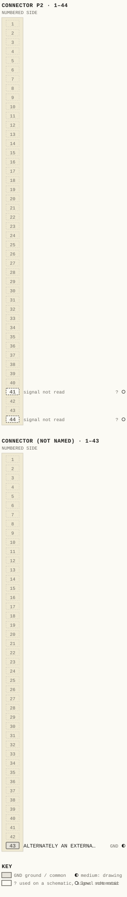
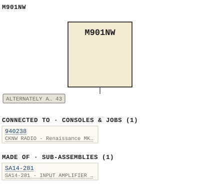

M901NW
| Type | module |
| Category | UNSORTED |
| Try it | simulator & front panel · download package (zip) |
| Earliest dated evidence | 1994|27 — original file date |
| Evidence | saved 1994-10-27: WBSps Engineering from H drive-20261018T013433Z-1-001/WBSps Engineering from H drive/WBSps - Word Perfect Manuals/M901NW.WP |
| Confidence | medium |
| All years found | 1994|27 |
| Used in jobs | 940238 (1994|27) |
| Variants | M901, M901A, M901B, M901BY, M901C, M901CY, M901D |
| Folder | Consoles/1990-1999/940238 - CKNW |
| Folder | DOCUMENTS/RECENT SCANS/WBSps.ca 20210317 - Large pile of D |
| Folder | Modules/UNSORTED/M901NW |
Connections
What it is made of and what it is part of.
Pictures


M901NW.pinout.svg

M901NW.connections.svg 1994 - 940238 - DOC - 940238-03-004 - LONG FULL RAD SLOT SEE DEUAIL NOTE.jpg
1994 - 940238 - DOC - 940238-03-004 - LONG FULL RAD SLOT SEE DEUAIL NOTE.jpg 1994 - 940238-03-004 - M901NW MIC INPUT MODULE - DRN DRG - ISS 1.jpg
1994 - 940238-03-004 - M901NW MIC INPUT MODULE - DRN DRG - ISS 1.jpgPinout & connections
Each contact as its own documents name it: 1 named (1 medium confidence). An empty slot is a contact no page names. Hover a contact for its source; the table under the drawing lists them.
pinout (SVG) · connections (SVG) · pins (JSON)
Pin evidence — 3 contacts
| Pin | Signal | Kind | Confidence | Read from | Source |
|---|---|---|---|---|---|
| 43 | ALTERNATELY AN EXTERNAL GROUND | ground / common | medium | prose | 1994 - M901NW - 14-281-02-001 - SA14-281 - IN…, p. 1 “Alternately an external ground applied at edge connector P2 pin 43 will produce the same effect.” |
| P2-41 | — | used on a schematic, signal not read | low | schematic | 1994 - M901NW - 14-281-02-001 - SA14-281 - IN…, p. 1 “This state change can be brought about by two different methods: Momentary operation of the Cue switch SW5, or momentary closure of the ext…” |
| P2-44 | — | used on a schematic, signal not read | low | schematic | 1994 - M901NW - 14-281-02-001 - SA14-281 - IN…, p. 1 “Momentary operation of the channel off switch SW3 or momentary grounding of the external channel off control input at P2-44 will result in …” |
Physical manual inventory
| Item | Location | Status | Scanned |
|---|---|---|---|
| M901NW, CUSTOM LINE INPUT MODULE | LOOSE BOX |
Documents (1)
| Year | File | |
|---|---|---|
| 1994|27 | 1994 - M901NW - 14-281-02-001 - SA14-281 - INPUT AMPLIFIER - ASSEMBLY.wp | note |
Photos & scans (3)


Sub-assemblies & parts used (1)
| Item | What | Family | Year | How we know |
|---|---|---|---|---|
| SA14-281 | SA14-281 - INPUT AMPLIFIER - ASSEMBLY | Circuit boards (SA14-nnn) | drawing filed with it |
Parts list — board M901NW (64 parts)
From M901NW.WP; also in timelines/data/bom.csv.
| Ref | Part | Value | Manufacturer | Mfr part no. |
|---|---|---|---|---|
| ATT1 | Fader | P&G | PG3210 | |
| C1 | Capacitor | 10 uF/25 V | ITT | 10M25 |
| C106 | Capacitor | 22 | uF/25 | V Siemens 85200 |
| CR21 | delete | |||
| CR22 | Diode | " | 1N4148 | |
| CR70 | delete | |||
| CR71 | Diode | " | 1N4003 | |
| CR83 | delete | |||
| CR84, CR85 | Diode | " | 1N4003 | |
| DS1 | Lamp, Min Flange 24V | Spectro | 387 | |
| DS2 | Super-Right, Clear Red,T1-3/4 | Liteon | LTL-4268-H4 | |
| DS3, DS4 | LED, Yellow | H.P. | HLMP-1401 | |
| DS5, DS6 | delete | |||
| DS15 | LED, Yellow | H.P. | HLMP-1401 | |
| DS16 | Lamp, Min Flange 24V | Spectro | 387 | |
| LK5, LK6 | PCB Solder Link | |||
| LK7- LK13 | Connector, 3 Pin Male | Berg | 929705-01-03 | |
| LK14- LK16 | PCB Solder Link | |||
| Q1 | Transistor | National | 2N3904 | |
| R1 | Resistor | 1/4W 5% | 15K | Philips CR25 |
| R2 | Potentiometer | 500K | Piher | PT10V 500K |
| R3 | Resistor | 1/4W 5% | 470K | Philips CR25 |
| R6 | Potentiometer | 100K | Piher | PT10V 100K |
| R7 | Resistor | 1/4W 1% | 1K | Philips MRS25F |
| R15 | Potentiometer | 500K | Piher | PT10V 500K |
| R16 | Resistor | 1/4W 5% | 470K | Philips CR25 |
| R19 | Potentiometer | 100K | Piher | PT10V 100K |
| R20 | Resistor | 1/4W 1% | 1K | Philips MRS25F |
| R23 | Potentiometer | 5K | Piher | PT10V 5K |
| R24 | Resistor | 1/4W 5% | 16K | Philips CR25 |
| R34 | Jumpered | |||
| R35 | Jumpered | |||
| R36 | delete | |||
| R37 | Resistor | 1/4W 5% | 20K | Philips CR25 |
| R41 | Resistor | 1/4W 1% | 15K | Philips MRS25F |
| R46 | Resistor | 1/4W 5% | 100K | Philips CR25 |
| R47 | Resistor | 1/4W 1% | 15K | " MRS25F |
| R66 | delete | |||
| R67 | Resistor | 1/4W 5% | 10K | Philips CR25 |
| R77 | Jumpered | |||
| R78 | Resistor | 1/4W 5% | 10K | Philips CR25 |
| R95 | SIP Resistor Network 10K | Bourns | 15-002 | |
| R96 | Resistor | 1/4W 5% | 3K3 | Philips CR25 |
| R100 | SIP Resistor Network 10K | Bourns | 15-002 | |
| R101 | Resistor | 1/4W 5% | 3K3 | Philips CR25 |
| R107 | Resistor | 1/4W 5% | 100K | Philips CR25 |
| R112 | delete | |||
| R117 | SIP Resistor Network | 4K7 | Bourns | 15-005 |
| R133 | SIP Resistor Network | 10K | Bourns | 15-002 |
| R134 | Resistor | 1/4W 5% | 3K3 | Philips CR25 |
| R137 | SIP Resistor Network | 10K | Bourns | 15-002 |
| R138 | Resistor | 1/4W 5% | 3K3 | Philips CR25 |
| R159 | Resistor | 1/4W 5% | 22K | Philips CR25 |
| R188 | Resistor | 1/4W 5% | 22K | Philips CR25 |
| R195 | Resistor | 1/4W 5% | 20K | Philips CR25 |
| R201 | Potentiometer | 5K | Piher | PT10V 5K |
| R202 | Resistor | 1/4W 1% | 47K5 | Philips MRS25F |
| R221 | Potentiometer | 5K | Piher | PT10V 5K |
| R222 | Potentiometer | 5K | Piher | PT10V 5K |
| R223 | Resistor | 1/4W1% | 10K | Philips MRS25F |
| U1 | Integrated Circuit | Analog | SSM2018P | |
| U16 | Integrated Circuit | Signetics | 74HC00N | |
| U28, U29 | delete | |||
| Q45, Q48 | Heatsink | Aavid | 577102 |
Consoles & jobs it is connected to (1)
Their own drawings name this module.
| Job | Year | Drawing | Page |
|---|---|---|---|
| 940238 | 1994|27 | 1994 - 940238-03-004 - M901NW MIC INPUT MODULE - DRN DRG - ISS 1.jpg | 1 |
Named in other drawings & documents (3)
| File | Page |
|---|---|
| 1995 - M405P - ITEMIMP(1).TXT (2).docx | 1 |
| 1995 - M405P - ITEMIMP(1).TXT.docx | 1 |
| 1995 - M405P - ITEMIMP.TXT.docx | 1 |
From the manuals
Each manual split into its sections. Text that is the same in many Ward-Beck manuals (warranty, address, standard notes) is kept once on the Boilerplate page and linked.
Specifications (1)
Technical Data — 1980 words · 1994 - M901NW - 14-281-02-001 - SA14-281 - INPUT AMPLIFIER - ASSEMBLY.wp, page 1
M901NW CUSTOM LINE INPUT MODULE
Input Sensitivity: -10 to +10 dBu. (ref. 600 ohm source).
Frequency Response: +/-0.2 dB from 20 Hz to 20 kHz. Measured at direct output.
Noise: Greater than 80 dB below nominal operating level, with the attenuator set for 15 dB "in hand" ( 20 Hz to 20 kHz).
Harmonic Distortion: Less than 0.01% from 20 Hz to 20 kHz at 10 dB above operating level.
Source Impedance: 600 ohms or less balanced.
Input Impedance: 30,000 ohms, balanced.
Output Impedance: Less than 60 ohms at insert and direct outputs.
Load Impedance: Greater than 10K balanced at insert and direct outputs.
Output Level: -6 dBu nominal, unbalanced.
Logic Input Levels: Logic 0: 0 to +1.75 volts dc. Logic 1: +3 to +24 volts dc.
External Control Output: Open Collector. Minimum Load Impedance: 600 ohms. Maximum Load Current: 30 mA. Maximum Supply Voltage: +24 volts dc. Saturated Collector Voltage: +2 volts maximum at 30 mA load.
Power Requirements: +/-23 volts dc, 150 mA.
Ambient Temperature: 0 to 50 degrees Celsius.
Weight: 700 grams. The M901NW is a custom M901C input module designed to provide dual stereo line level input facilities for the Renaissance series of radio consoles.
The input source selector allows two separate stereo inputs to be connected to the input module. Each input has its own preamplifier, allowing individual gain trimming and common mode balancing of the discrete source inputs.
The sensitivity controls are front panel accessible and accommodate input source levels from -10 to +10 dBu.
The selected preamplifier output is routed to the module connector for the insertion of optional processing.
The cue bus assignment is directed from the insert return to the cue bus to allow pre-VCA monitoring of source material.
A direct left and right channel output is provided at the module connector. These direct feeds may be optionally used for multitrack applications or to feed the console mix-minus system.
The module output is also assignable to any or all of four stereo program buses.
Two blind auxiliaries (one mono and one stereo) are also built into the M901NW. Both are pre-set to unity gain, and are assignable pre or post fader by appropriate placement of wire jumpers. The auxiliaries can be turned on and off in similar fashion.
A blind assignable monophonic post-VCA feed is assignable by a "Berg" jumper to the console mix minus bus.
Unitary control of most module functions is also available at the module connector for machine control as well as external control inputs.
Outgoing control signals are furnished as open collector paths to control common when activated. Comprehensive internal module logic allows intelligent control of external machines, with all outgoing control signals following module source selection (source A or B).
A momentary closure to control common (through an open collector transistor), is provided when the module is turned on or off for both the A or B source. This totals four independent outputs, one start and stop signal for both the A and B module sources.
An additional sustained closure to common is provided for both the A and B input sources. This closure is active when the main channel is on, and is provided for external use. These outputs are also internally assignable to one or all of three internal console muting busses. These busses run to the M905 monitor modules in the console system for muting the monitor speakers.
The internal buss structure of the console includes a cue control buss. If a module is assigned to this buss, putting the module into cue will activate the auto cue function in the M905A control room monitor module.
A separate LED over the channel fader indicates when the channel has been turned on. Both lamps in the ON and OFF pushbuttons are connected to the edge connector for use as external tally indicators.
Module control inputs are also configured to activate when a closure to control common is provided. The module can be turned on and off, the cue can be toggled, and the source can be selected between A and B by simply grounding the appropriate module connector pin.
Program buss assignment is also possible external to the module. Again, a closure to control common will effect this assignment. To change a previous buss assignment, the electronic latches require clearing before loading them with new buss assignments. A closure to common will also perform this function.
External control of the VCA within each module is also brought out to the edge connector. Application of a voltage between 0 and 5 volts DC will bring the attenuator from no external attenuation to full attenuation from the current fader position. This feature can be of benefit for automated cross-fading. The M901NW Stereo Line Input module is packaged in a 1.5" wide x 16.2" high x 6.6" deep space.
This module derives its power from the console system bipolar +/-23 volt power supplies. 1) Source "B" Select
Depressing this momentary switch (SW2), enables the "B" input source and disables the "A" input source selection (if it was selected). Double pressing the active switch will cancel the selection.
2) Source "A" Select
Depressing this momentary switch (SW1), enables the "A" input source and disables the "B" input source selection (if it was selected). Double pressing the active switch will cancel the selection. This source is selected automatically when power is supplied to the module.
3) P3 Select
Switch SW14, a momentary switch with an electronic latch attached to it, controls the assignment of the module output to the program 3 stereo buss in the console.
4) P1 Select
This electronically latched, momentary switch, (SW12), assigns the stereo audio signal to the program 1 stereo mix buss. This assignment is performed automatically on module power-up.
5) Q
This momentary electronic switch assigns the pre-fader signal to the console's stereo cue buss. This provides a pre-fade listen feed for cuei
Drawings (1)
Each scan with its trace laid over it: the slider runs from the scan to the vector drawing. Click one to see it large and save it as SVG, DXF, KiCad, PDF or PowerPoint.
Long Full Rad Slot See Deuail Noteviewer
Read from the drawing title blocks.
| Drawing | Title | Date | Drawn by | Checked by | Iss. | Source |
|---|---|---|---|---|---|---|
| 940238-03-004 | Long Full Rad Slot See Deuail Note | MIC | 3 | file |